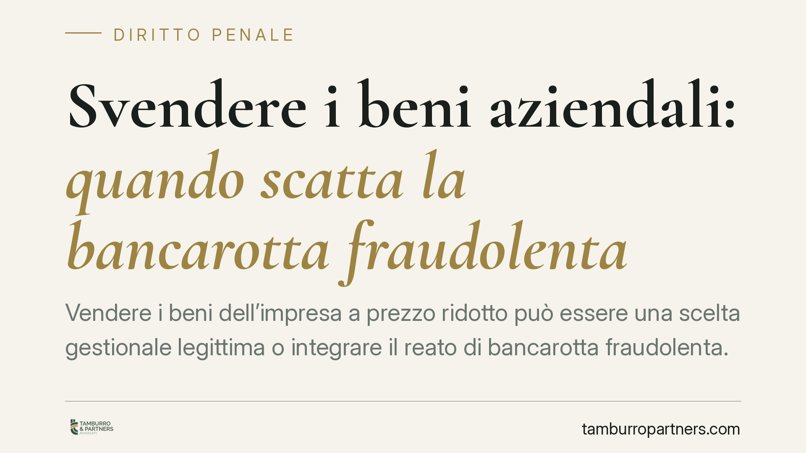

Svendere i beni aziendali: quando scatta la bancarotta fraudolenta
Vendere i beni dell'impresa a prezzo ridotto può essere una scelta gestionale legittima o integrare il reato di bancarotta fraudolenta. La Corte di Cassazione penale, Sezione 5, torna a tracciare il confine tra il tentativo lecito di salvataggio e la dissipazione del patrimonio ai danni dei creditori. Vediamo i criteri che fanno la differenza e cosa deve sapere chi amministra un'impresa in difficoltà.

Il fatto e perché conta
L'imprenditore in crisi che liquida magazzino, macchinari o immobili a prezzi inferiori al valore di mercato si muove su un terreno scivoloso. Quella stessa operazione, a seconda delle circostanze, può essere letta come un tentativo ragionevole di fare cassa oppure come una sottrazione di risorse che impoverisce la garanzia dei creditori.
La distinzione non è teorica. Dopo l'eventuale dichiarazione di insolvenza, il curatore e il pubblico ministero ricostruiscono le operazioni degli ultimi anni. Una svendita anomala finisce sotto esame, e la qualificazione come reato cambia radicalmente la posizione dell'amministratore.
Inquadramento normativo
Il riferimento resta il R.D. 267/1942 (legge fallimentare), applicabile ai fatti anteriori all'entrata in vigore del Codice della crisi. L'art. 216, comma 1, n. 1, punisce la bancarotta fraudolenta patrimoniale: l'imprenditore che ha distratto, occultato, dissimulato, distrutto o dissipato in tutto o in parte i suoi beni, con danno per i creditori.
La dissipazione è proprio la figura che intercetta le svendite: consiste nell'impiego di risorse aziendali in modo incoerente con le esigenze dell'impresa, tale da disperdere valore senza una contropartita adeguata. L'art. 223 estende la responsabilità agli amministratori, direttori generali e liquidatori di società, richiamando anche le operazioni dolose che cagionano il dissesto.
La Cassazione penale, Sezione 5, ha più volte chiarito che non ogni vendita sottocosto è penalmente rilevante. Conta la giustificazione economica dell'atto: la cessione a prezzo ridotto può rientrare nella fisiologia gestionale quando risponde a una logica imprenditoriale verificabile, ad esempio la necessità di liquidità immediata o lo smaltimento di beni obsoleti.
Il confine tra salvataggio lecito e distrazione
Il discrimine ruota attorno ad alcuni indici concreti. Il giudice valuta se il ricavato della vendita sia effettivamente entrato nelle casse sociali e sia stato destinato all'attività o al pagamento dei debiti, oppure se sia stato dirottato altrove.
Pesano la vicinanza temporale rispetto all'insolvenza, l'identità dell'acquirente (operazioni con soggetti collegati all'imprenditore sono scrutinatе con maggiore rigore), lo scarto tra prezzo pattuito e valore reale, l'assenza di documentazione che spieghi la scelta.
Quando la svendita trasferisce ricchezza a terzi compiacenti o a società riconducibili allo stesso gruppo familiare o imprenditoriale, senza una reale contropartita per l'impresa cedente, la lettura vira verso la distrazione. Quando invece esiste una motivazione economica tracciabile e il corrispettivo rimane nel patrimonio sociale, la condotta resta nel perimetro della gestione lecita, anche se infruttuosa.
Implicazioni pratiche per chi amministra
Per l'imprenditore e gli amministratori questo significa che la buona fede va documentata prima, non ricostruita dopo. In sede penale la responsabilità per bancarotta fraudolenta non richiede l'intenzione di causare il fallimento: è sufficiente la consapevolezza di diminuire la garanzia patrimoniale dei creditori.
La differenza con la bancarotta semplice (art. 217, che punisce le operazioni gravemente imprudenti) è rilevante sul piano sanzionatorio ed è spesso oggetto di contestazione difensiva. Dimostrare la logica gestionale dell'operazione può spostare la qualificazione o escludere il reato.
I creditori e il curatore, dal canto loro, dispongono di strumenti per segnalare le operazioni sospette e sollecitare le indagini, oltre alle azioni civili di natura revocatoria e risarcitoria.
Cosa fare in concreto
- Documenta ogni cessione sottocosto con perizie, preventivi o evidenze di mercato che giustifichino il prezzo e l'urgenza della vendita.
- Traccia la destinazione del ricavato: deve rimanere nel circuito aziendale e servire a pagare debiti o sostenere l'attività.
- Evita operazioni con società o soggetti collegati senza una contropartita verificabile e condizioni di mercato.
- Consulta un legale penalista già nella fase di crisi, prima di liquidare asset rilevanti, non dopo l'eventuale apertura della procedura.
- Conserva verbali, delibere e corrispondenza che attestino il percorso decisionale degli organi sociali.
L'esame caso per caso resta la regola: valutazioni scommisurate alla singola operazione sono indispensabili per capire se si rientri nella gestione lecita o nel penalmente rilevante.
Contributo informativo a cura di Tamburro & Partners - Avv. Giuseppe Tamburro. Non costituisce parere legale.
Ogni condominio ha una storia a sé.
Se gestisci un'amministrazione e vuoi un confronto su una specifica questione condominiale, scrivi allo studio. Ti rispondiamo entro un giorno lavorativo.